one-cycle strip
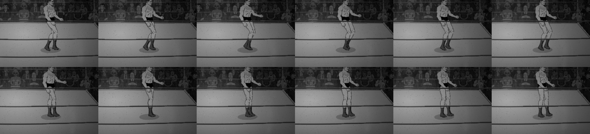

one-cycle strip
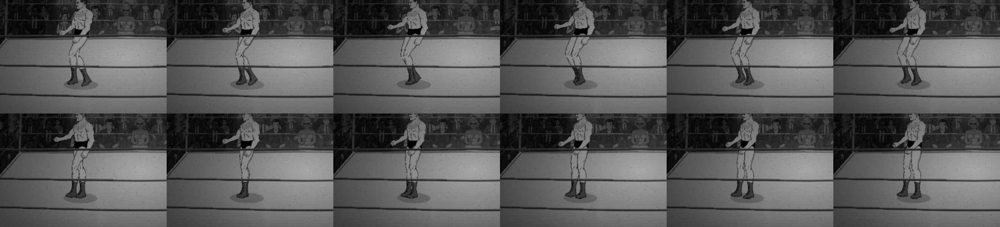

one-cycle strip
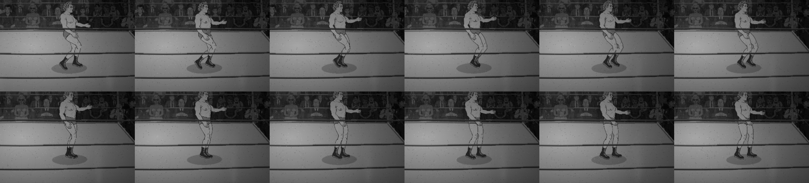

one-cycle strip
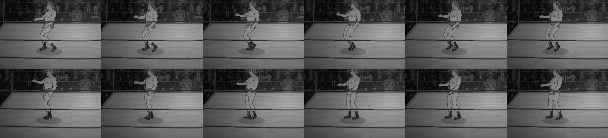
Loops are normal speed (30 fps capture of 1/60 s steps, played at 30 fps). Numbers are measurements; nothing here says the gait reads right or wrong. Derek names what is bad, ranked, in his words; only those items go to Stage 2/3. Seed 0x5eed1234 installed before game init. Rigs: thesz-procreate-v1 (Lou) and george-roster-v1, both facings; the other rig stands at the far end so the subject faces it.
| Observation | Verdict | Key numbers | |
|---|---|---|---|
| A | Run phase advances at WALK_FREQ × 0.8 | confirmed | Run, planted-foot speed vs body: Lou 37%, George 19% (the ×0.8 alone predicts 20%). Drift per stance: Lou 18.5 px, George 9.6 px. |
| B | Run reuses walk STRIDE/STANCE: no flight, cadence ~5.3 | confirmed | Run cadence 5.23 steps/s (walk 2.52); flight fraction 0.00; double support 0.107. |
| C | Run hip uses the walk bob (highest mid-stance) | confirmed | Hip at near-foot mid-stance vs mean, run: Lou -0.63 px, George -1.21 px (negative = up, the walk model). Bob peak-to-peak 2.7 / 4.5 px, same as walk. |
| D | Lean 0.07 × gaitBlend for walk and run | confirmed from source, not measured | Wrestler.js:2918 uses 0.07 × moveBlend for both. skeleton.torso.rotation reads 0 in every frame, so lean is applied elsewhere and the film has no lean number. Derek's eye decides. |
| E | Stop: walkPhase decays with no travel, feet move | confirmed | Body moved 0 px; mean foot travel per foot while still: Lou walk-stop 37–48 px, George 32–45 px, run-stop 54 (Lou) / 64 (George) px. walkPhase reaches 0 in ~35 frames. |
| F | STANCE .55: walk double support ~5% | low confirmed; the number was off | Measured walk double support 0.091 (plan guessed ~5%); STANCE .55 gives ~10%. Walk cadence 2.52 steps/s (plan said ~2.75). |
| G | One global GAIT for every body | confirmed | Cadence is identical on both rigs (2.52 walk, 5.23 run) though Lou draws at height scale 0.7907 and George at 1.01201. |
| H | NEW: gait phase uses s, the rig is drawn at s × _heightScale | found by the film | Walk planted-foot speed vs body: Lou 20.9% (9.1 px drift per stance), George 1.2% (0.52 px). 1 − 0.7907 = 21%, 1 − 1/1.012 = 1.2%: the heightScale accounts for it. So the planted foot of a 0.79-scale rig moves forward at about a fifth of body speed at a plain walk. |
| R | Rope turn (run, whip) | measured | Largest one-frame foot step relative to the body in ±12 frames of the turn: run Lou 34.8 px, George 44.5 px; whip Lou 7.8, George 10.0 px. Planted-foot world slip in the window: run 34.8 / 44.5 px. The window includes the facing flip. |




| rig | facing | segment | v px/s | drift med/max px | foot spd % body | steps/s | stance | dbl supp | flight | hip bob px | hip @ mid-stance px |
|---|---|---|---|---|---|---|---|---|---|---|---|
| thesz-procreate-v1 | right | walkA | 113.3 | 9.09/9.09 | 20.9 | 2.52 | 0.587 | 0.091 | 0 | 2.7 | -0.64 |
| thesz-procreate-v1 | right | walkB | 113.3 | 9.09/9.09 | 20.9 | 2.52 | 0.503 | 0.091 | 0 | 2.69 | -0.43 |
| thesz-procreate-v1 | left | walkA | 113.3 | 9.09/9.09 | 20.9 | 2.52 | 0.587 | 0.091 | 0 | 2.7 | -0.64 |
| thesz-procreate-v1 | left | walkB | 113.3 | 9.09/9.09 | 20.9 | 2.52 | 0.503 | 0.091 | 0 | 2.7 | -0.43 |
| george-roster-v1 | right | walkA | 113.3 | 0.52/0.52 | 1.2 | 2.52 | 0.587 | 0.091 | 0 | 4.49 | -1.2 |
| george-roster-v1 | right | walkB | 113.3 | 0.52/0.52 | 1.2 | 2.52 | 0.503 | 0.091 | 0 | 4.49 | -0.9 |
| george-roster-v1 | left | walkA | 113.3 | 0.52/0.52 | 1.2 | 2.52 | 0.587 | 0.091 | 0 | 4.49 | -1.2 |
| george-roster-v1 | left | walkB | 113.3 | 0.52/0.52 | 1.2 | 2.52 | 0.503 | 0.091 | 0 | 4.49 | -0.9 |

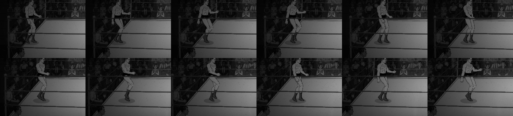

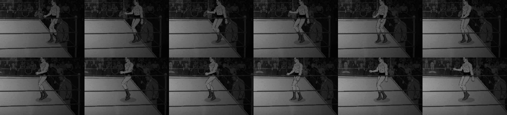

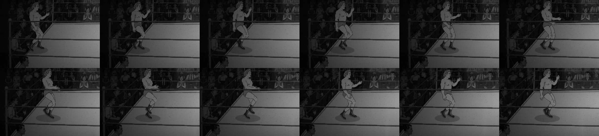

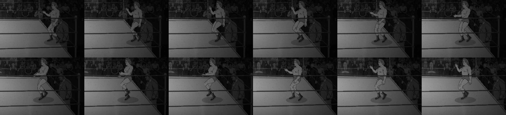
| rig | facing | segment | v px/s | drift med/max px | foot spd % body | steps/s | stance | dbl supp | flight | hip bob px | hip @ mid-stance px |
|---|---|---|---|---|---|---|---|---|---|---|---|
| thesz-procreate-v1 | right | toRope | 275.1 | 18.53/18.53 | 36.8 | 4.19 | 0.535 | 0.07 | 0 | 2.66 | -0.58 |
| thesz-procreate-v1 | right | returning | 275.1 | 18.53/20.22 | 36.8 | 5.23 | 0.584 | 0.107 | 0 | 2.7 | -0.63 |
| thesz-procreate-v1 | left | toRope | 275.1 | 18.53/18.53 | 36.8 | 4.19 | 0.535 | 0.07 | 0 | 2.66 | -0.58 |
| thesz-procreate-v1 | left | returning | 275.1 | 18.53/20.22 | 36.8 | 5.23 | 0.584 | 0.107 | 0 | 2.7 | -0.63 |
| george-roster-v1 | right | toRope | 275.1 | 9.6/9.6 | 19 | 4.19 | 0.535 | 0.07 | 0 | 4.42 | -1.05 |
| george-roster-v1 | right | returning | 275.1 | 9.6/10.48 | 19 | 5.23 | 0.584 | 0.107 | 0 | 4.49 | -1.21 |
| george-roster-v1 | left | toRope | 275.1 | 9.6/9.6 | 19 | 4.19 | 0.535 | 0.07 | 0 | 4.41 | -1.05 |
| george-roster-v1 | left | returning | 275.1 | 9.6/10.48 | 19 | 5.23 | 0.584 | 0.107 | 0 | 4.49 | -1.21 |

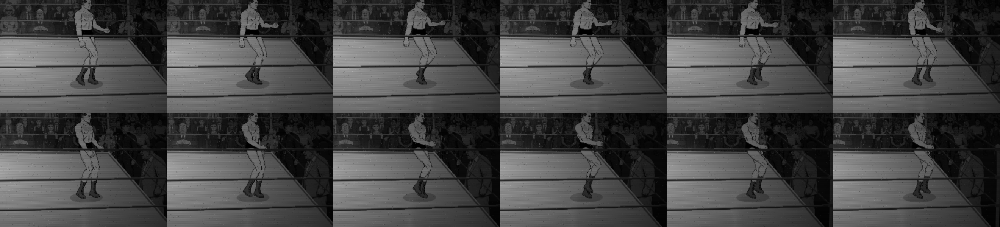

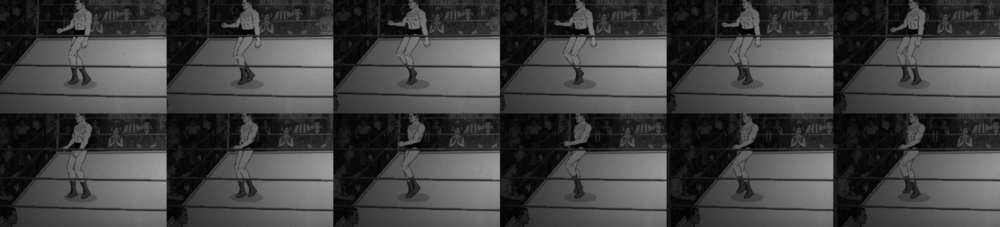

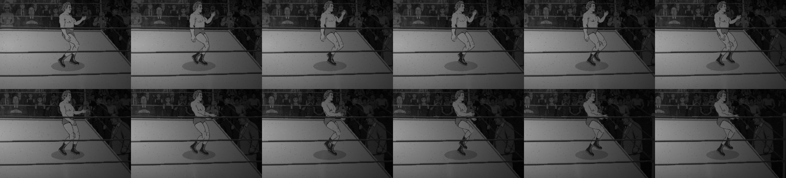

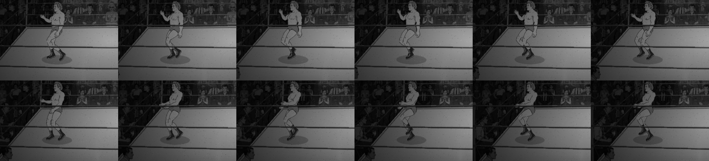
| rig | facing | segment | v px/s | drift med/max px | foot spd % body | steps/s | stance | dbl supp | flight | hip bob px | hip @ mid-stance px |
|---|---|---|---|---|---|---|---|---|---|---|---|
| thesz-procreate-v1 | right | toRope | 275.1 | 18.53/20.22 | 36.8 | 5.66 | 0.575 | 0.094 | 0 | 5.77 | -0.6 |
| thesz-procreate-v1 | right | returning | 275.1 | 18.53/20.22 | 36.8 | 5.23 | 0.557 | 0.101 | 0 | 2.7 | -0.68 |
| thesz-procreate-v1 | left | toRope | 275.1 | 18.53/20.22 | 36.8 | 5.66 | 0.575 | 0.094 | 0 | 5.77 | -0.6 |
| thesz-procreate-v1 | left | returning | 275.1 | 18.53/20.22 | 36.8 | 5.23 | 0.557 | 0.101 | 0 | 2.69 | -0.68 |
| george-roster-v1 | right | toRope | 275.1 | 9.6/10.48 | 19 | 5.66 | 0.575 | 0.094 | 0 | 12.56 | -1.1 |
| george-roster-v1 | right | returning | 275.1 | 9.6/10.48 | 19 | 5.23 | 0.557 | 0.101 | 0 | 4.49 | -1.26 |
| george-roster-v1 | left | toRope | 275.1 | 9.6/10.48 | 19 | 5.66 | 0.575 | 0.094 | 0 | 12.53 | -1.1 |
| george-roster-v1 | left | returning | 275.1 | 9.6/10.48 | 19 | 5.23 | 0.557 | 0.101 | 0 | 4.49 | -1.26 |